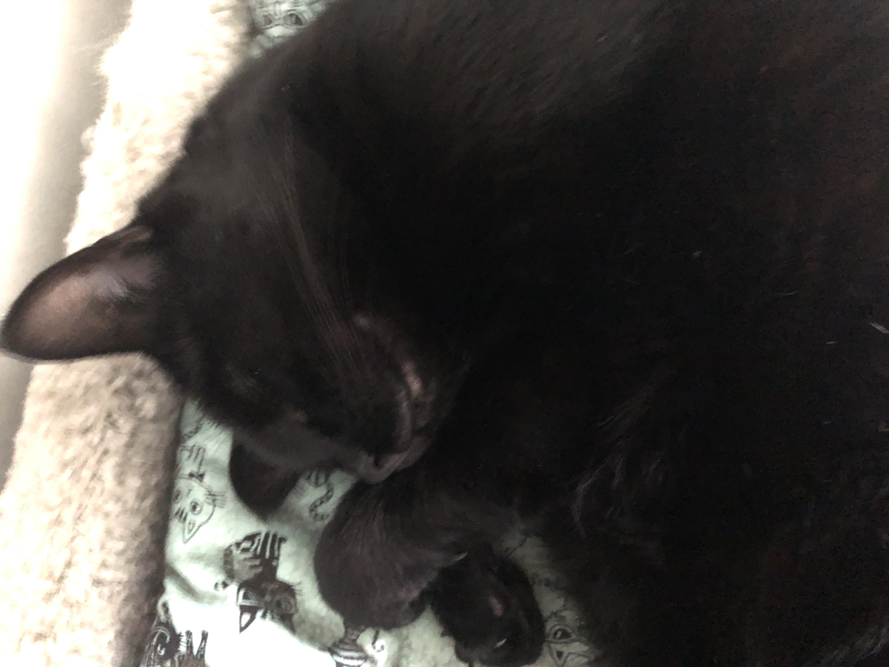
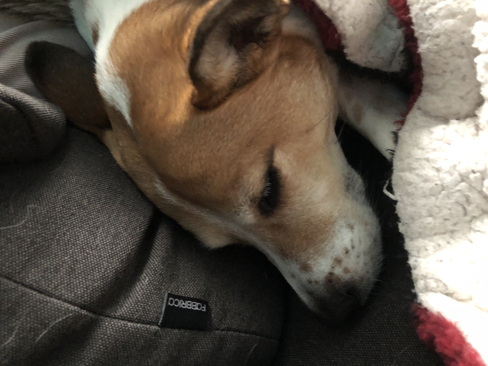

Hi. I like my pets. My cat and dog are great pets.
Here is a picture of my cat and a picture of my dog.

My cat's name is Pixel and my dog's name is Clover. Pixel likes:
food
treats
sleep
playing
catnip
Clover likes:
food
treats
walks
sleep
They are very similar, however Pixel hates Clover and most other animals, including other cats, for some reason.
Roger the Kangaroo
Roger the Kangaroo was an extremely muscular Australian Red Kangaroo. This is him.
Here is a video made about Roger posted by CBC
Sadly, Roger passed away December 8th, 2018. He was 12 years old.
Here is a few pictures of him.